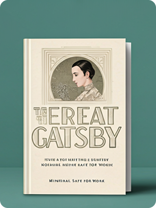

Descubre el placer de leer juntos
Nuestro club de lectura te invita a explorar nuevos mundos, compartir ideas y conectar con otros amantes de los libros. Cada mes, seleccionamos un libro fascinante para discutir y disfrutar.
Ver el libro del mesLibro del Mes
El Jardín Secreto
Una joven descubre un jardín abandonado que guarda secretos y magia, transformando su vida y la de quienes la rodean.
Ver más...
Próximos Eventos
-
Discusión sobre 'El Jardín Secreto'
-
Taller de escritura creativa
-
Noche de juegos de mesa literarios
Libros Leídos Anteriores

El Gran Esteban
F. Scott Fitzgerald

Cien Años de Soledad
Gabriel García Márquez

Orgullo y Prejuicio
Jane Austen